Monster refinement A1
The three existing monsters furthest from your concept sheets, rebuilt from the game's own shapes to match: Burning Dead, Treant Elder and Fallen One. Each one shows your concept, then the game sprite before and after in six facings, walk, attack, hit and death, at the size the game draws them, enlarged. Nothing else in the game changed: the other 25 monsters render pixel for pixel as before.
Burning Dead
skeleton family · floors 2+ · 3 passes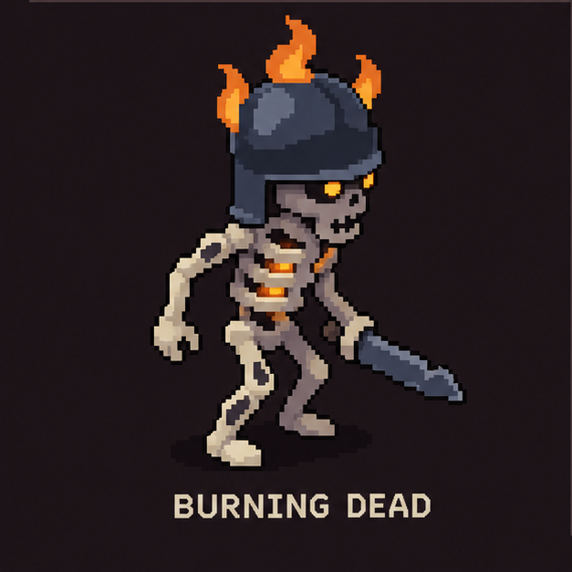
- The helm used to swallow the whole face. Now it's an open dark-iron kettle helm that sits high, so the burning eyes show under the brim.
- Three flickering flames, on the crown and both sides, each with a yellow heart. They die down over the death frames.
- Embers glow inside the ribcage, scorch marks band the long bones, and it carries a broad pointed steel blade.
Each pass won the side-by-side check in both orders. Pass 1 helm was too pale and the flames stiff; pass 2 fixed the shape; pass 3 added the yellow cores.
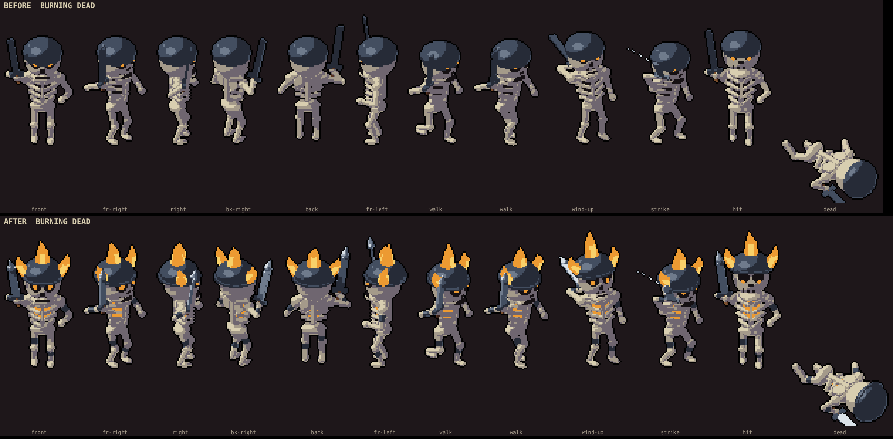
Treant Elder
autumn boss · 3 passes
- The canopy used to hide the face. It's now lifted clear and spread into a wide clover of leaf lobes.
- A scowling face cut into the trunk: a heavy dark brow, deep sockets with larger green eyes, and a down-turned mouth.
- The trunk flares into six roots at the floor. The long branch arms end in four big hooked claws.
Each pass won both orders. Pass 2 fixed a faint face and weak roots; pass 3 widened the crown.
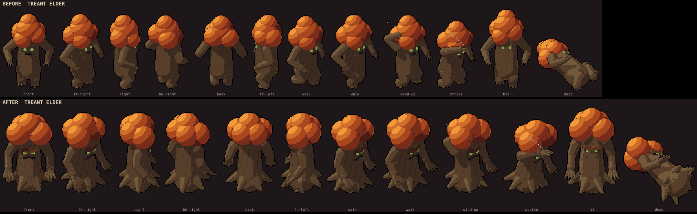
Fallen One
imp pack · the Fallen Shaman shares the body · 2 passes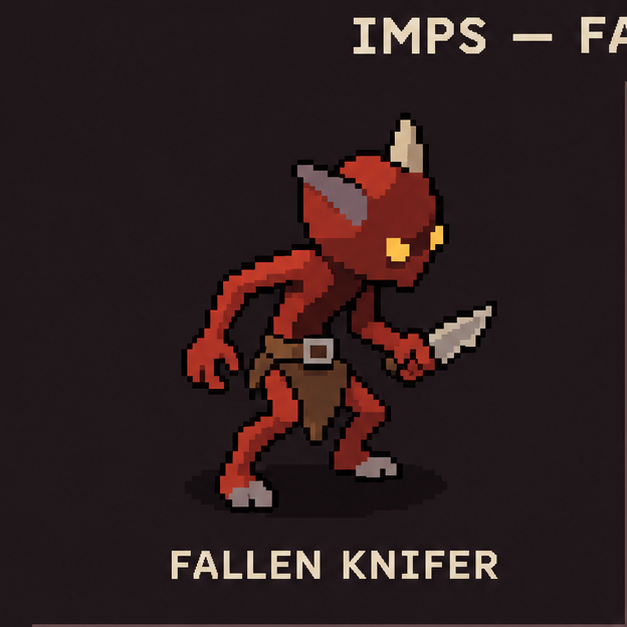
- Wiry limbs and a lean body instead of the round, chunky one; grey hooves.
- A rounder-square head with a brow ridge and pointed chin, angry slanted yellow eyes, big grey ears swept back, and pale horns.
- A belt with an iron buckle over a pointed leather loincloth. It keeps its spear, as in your Fallen Spearling.
- The hooded Fallen Shaman gets the same body, with its ears through the hood like your Ember Acolyte. Goblins and diggers are unchanged.
Pass 1's head was built on a box and read as a cube; pass 2 rounded it and won both orders.
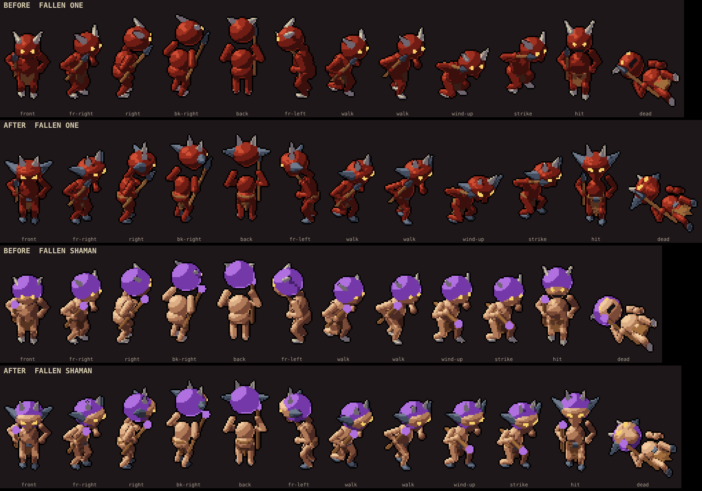
Silhouettes
flat black, as the readability check sees them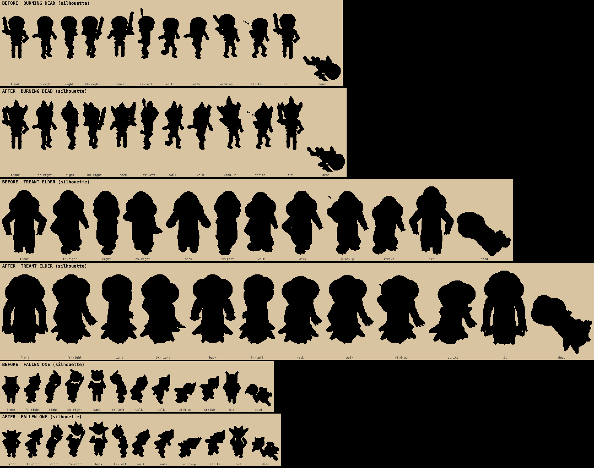
Every pass
the review loopBurning Dead: before vs pass 1, pass 2, pass 3
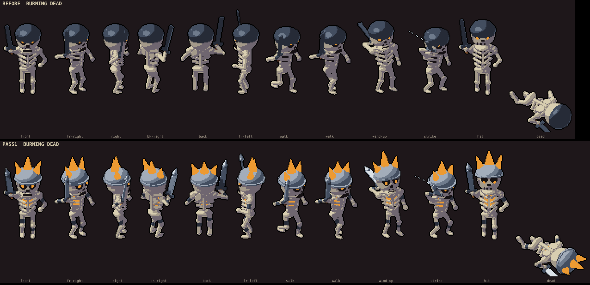
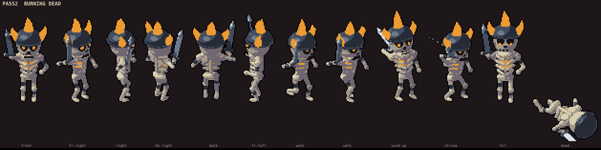
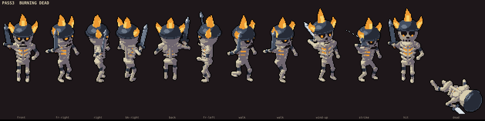
Treant Elder: before vs pass 1, pass 1 vs 2, pass 2 vs 3
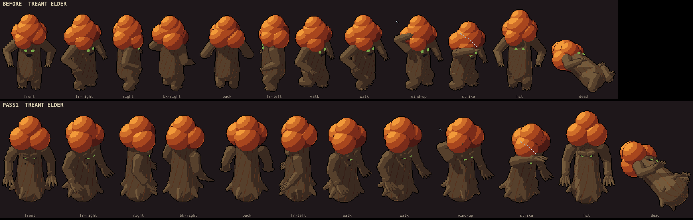
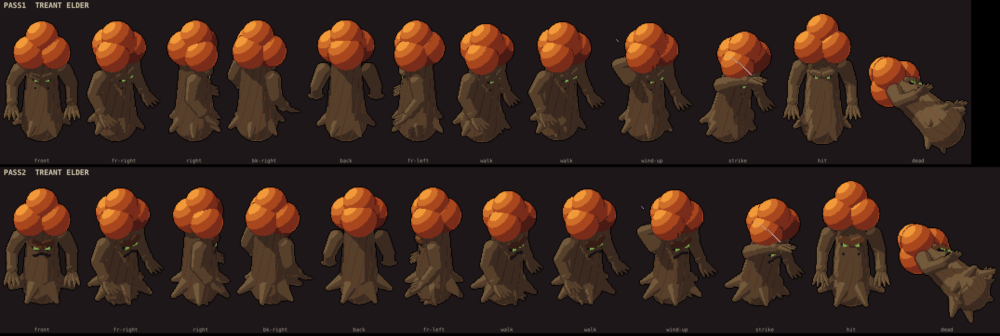
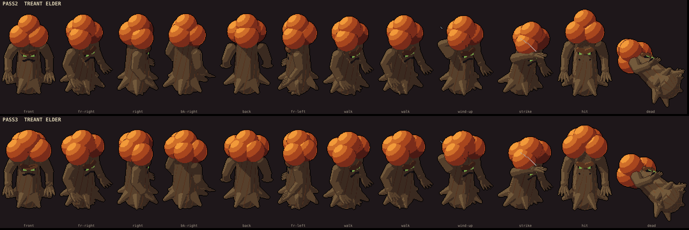
Fallen One: before vs pass 1, pass 1 vs 2
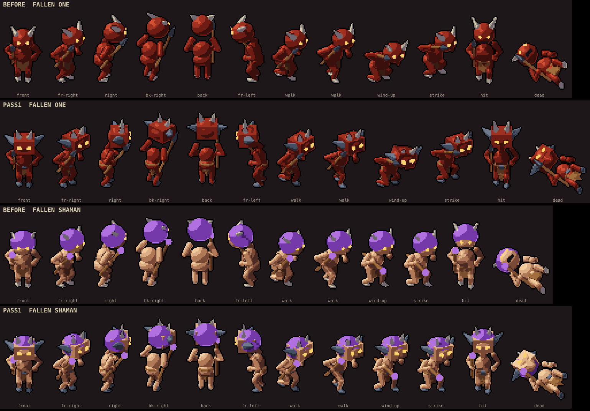
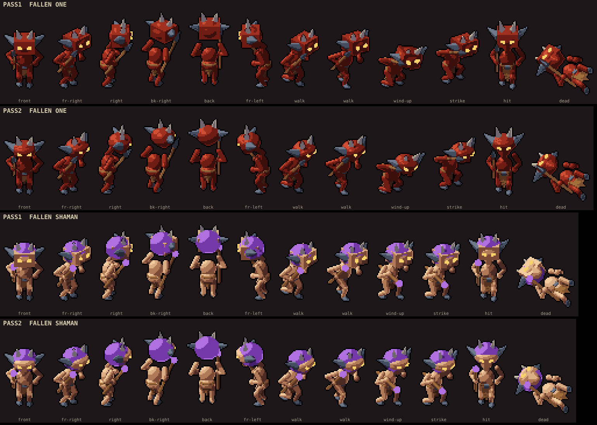
What I'd like from you
- Keep, tweak or reject each of the three. Name the frame or part if something's off.
- Which to refine next. The skeleton, goblin and spider are already close to their concepts. The hounds and the ogre-kin sheet are the next-biggest gaps.